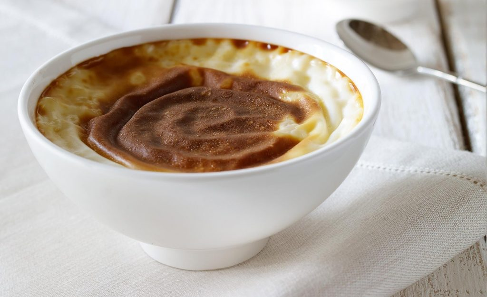

Sütlaç

Description
Sütlaç is a light dessert that is simply made with milk, sugar, and rice.
Sütlaç dessert is in Turkish culinary culture for more than 400 years. Today, It is widely known as Turkish Rice Pudding around the globe.
Ingredients
- 1 cup sugar
- 1/2 cup white rice
- 4 3/4 cup whole milk (divided by two as 3 3/4 cup and 1 cup)
- 2 tbsp wheat starch
- 1.5 teaspoon vanilla extract
Instructions
- First pre-heat the oven to 180 C (350 F)
- Rinse the rice under cold water to remove rice surface starch and place it in a large saucepan with enough water to cover it. Bring it to a boil and then reduce the heat to medium level. Let the rice cook about 5 minutes. (until rice softens)
- Add the first portion of milk (3 3/4 cups), sugar, and vanilla extract to the rice. Bring the mix to a boil and then reduce the heat to the medium level and let the mix boil for about 10 minutes.
- Mix the remaining 1 cup milk and the wheat starch in a bowl until mix get smooth form. Pour this mix to the rice mix and stir continuously and slowly until all combine well.
- When the pudding thickens remove it from the heat and distribute to the ovenproof clay cups or dessert cups evenly. Place the clay cups to the baking tray. And then pour some water to the baking tray to create moisture during baking (about 0.75 inch depth or 2 cm)
- Bake the pudding cups until the tops have brown color (usually it takes 17-20 minutes that the pudding top color to turn brown). And then let the cups cool at room temperature and then put the cups to the refrigerator for resting few hours before serving.